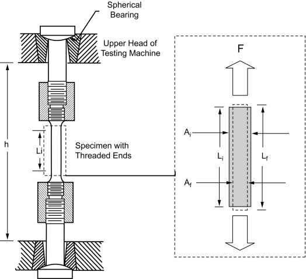
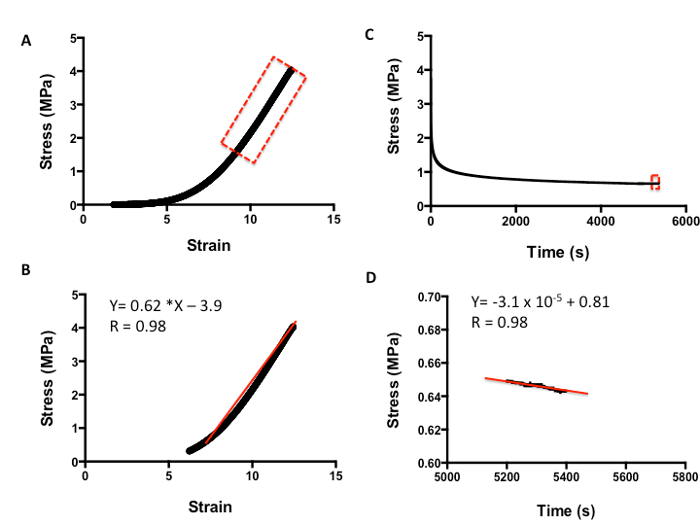
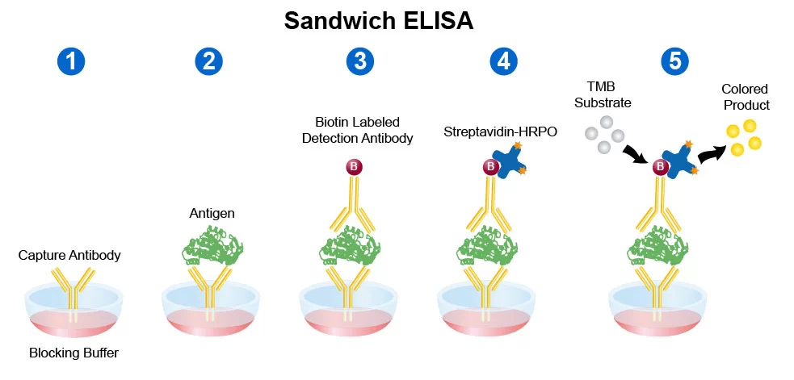
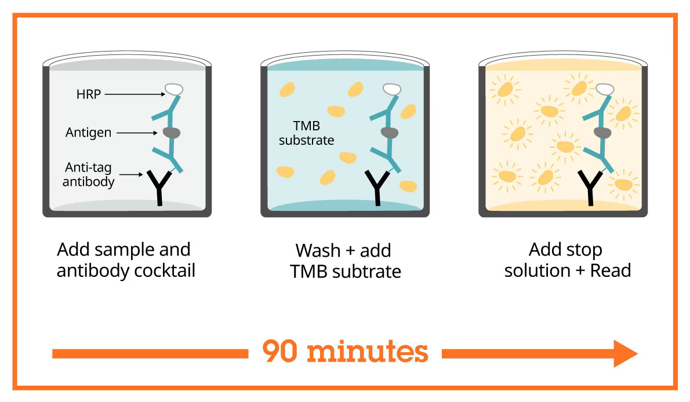
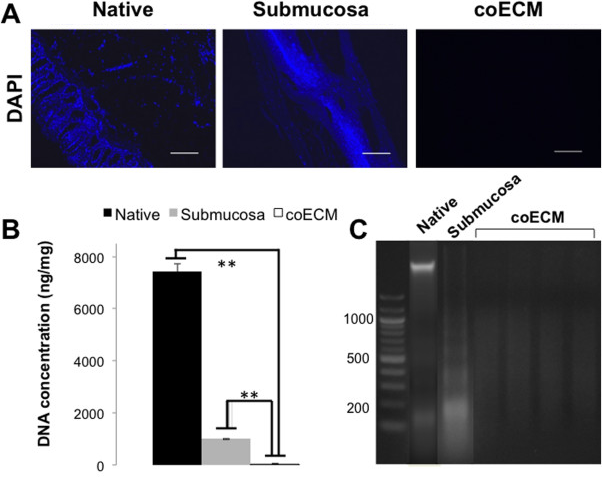
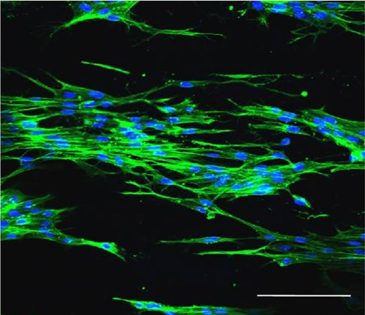

Background
My team and I worked with a hypothetical company that makes an acellular allograft for breast reconstruction and hernia repair. The allograft is on backorder, and the company wants to change its manufacturing process in order to increase production.
Modifying the established manufacturing process introduces risks to cell removal efficiency and the structural integrity of the extracellular matrix (ECM), which determines the graft's strength, support, and flexibility. The current process is part of the specification already filed with regulators, so the modified one has to be proven equivalent, not just feasible. We developed the validation protocol that evaluates the modified process for senior management to review before approving the change.
Study design
Each study compares a control group of 10 standard process grafts against an experimental group of 10 modified grafts. Each study uses a randomized, blinded, and controlled design to ensure objective and reproducible results. Tissue samples are obtained from matched donors, randomly assigned to test groups, and coded to blind the analysts to the processing condition. Controls are established independently for each assay, and all samples are stored at −80 °C until analysis. Statistical testing is conducted with a significance level of α = 0.05 and 80% power. Groups are compared with a two-tailed Welch's t-test, which does not assume equal variances and holds up against the mild departures from normality expected at this sample size. Results are reported as mean ± SD.
Safety
All work follows BSL-2 practice, since the allografts and the dermal fibroblasts are human-derived and are treated as potentially infectious. Personnel wear a lab coat, nitrile gloves and safety glasses, handle cell culture in a Class II biosafety cabinet using aseptic technique, and discard tissue, culture waste, scalpels and cryostat blades into biohazard and sharps containers.
Paraformaldehyde fixation, the pepsin–acetic acid digestion and the boiling oxalic acid extraction are carried out in a fume hood, as is the sulfuric acid stop solution; oxalic acid is corrosive and is handled hot. Ethidium bromide is a mutagen, so gels, running buffer and tips go into a dedicated ethidium bromide waste stream, and the transilluminator is used behind a UV-blocking shield. Cryopreserved stocks and −80 °C samples are handled with cryogenic gloves.
Mechanical testing: uniaxial tensile test
Objective
Determine whether the modified tissue processing parameters affect the allograft's mechanical properties. Evaluate ultimate tensile strength, Young's modulus, and flexibility (elongation at failure) via uniaxial tensile testing.
Rationale
The dermal matrix must retain sufficient mechanical strength and flexibility to function properly during implantation and healing. A change in processing can damage collagen fiber organization, shift stiffness or elasticity, and lower resistance to tearing.
Materials
| Group | Items |
|---|---|
| Tissue | Control allografts (n = 10), experimental allografts (n = 10), patient-derived dermal samples |
| Equipment | Instron universal testing machine with a 100 N load cell, tissue grips, digital calipers, PBS bath |
| Consumables | Sterile scalpels, forceps, cutting templates, specimen labels |
| Software | Instron Bluehill, ImageJ, Excel |
Methods
Cut the allograft specimens to standardized dimensions according to ASTM soft-tissue tensile testing recommendations. Measure the thickness and width with digital calipers to calculate the cross-sectional area. Hydrate the samples in PBS for 30 minutes. Photograph each from a fixed angle and distance. Secure the sample in the Instron grips, ensuring no slippage or preload damage. Apply uniaxial tensile force at a constant crosshead speed of 10 mm/min until failure, with the Bluehill software recording force (N), displacement (mm), and the resulting stress-strain curve. After failure, photograph the specimen from the original position. Visually inspect and record tearing, delamination, fiber disruption, and uneven deformation. Analyze the same properties in ImageJ. Calculate and record ultimate tensile strength (MPa), Young's modulus (MPa), and flexibility as elongation at failure (%) from the stress-strain curve.


Analysis
Calculate the mean and standard deviation (SD) for the control and experimental groups across three mechanical variables: ultimate tensile strength (MPa), Young's modulus (MPa), and flexibility/elongation at failure (%). Calculate the percent difference between the control and experimental group for each variable. Perform a two-tailed Welch's t-test for each variable. Record all calculations and exact p-values, and present the data as graphs showing the mean ± SD, explicitly displaying all individual data points and p-value significance markers on the figures.
Expected result
The modified parameters should not reduce mechanical performance against the approved process (p > 0.05).
✓ Acceptable
No significant difference between groups (p > 0.05). Strength and elongation stay inside the product specification, and failure patterns match standard processed grafts.
! Ambiguous
A significant but modest reduction, 15–25%, with no extreme structural failure. Cyclic fatigue testing and SEM imaging of collagen architecture before a final decision.
✗ Unacceptable
A significant drop in strength, elasticity or flexibility (p < 0.05). Brittle behaviour or early failure, or evidence of ECM damage and delamination.
Biochemical testing: ELISA
Objective
Determine whether the modified tissue processing parameters affect the biochemical composition of the extracellular matrix (ECM). Use ELISA to evaluate collagen type I and elastin content.
Rationale
ELISA (Enzyme-Linked Immunosorbent Assay) enables specific, sensitive, and quantitative antibody-based detection in tissue lysate. Any processing change that degrades these proteins could compromise mechanical performance, regulatory compliance and clinical safety.
Materials
| Group | Items |
|---|---|
| Tissue | Control allografts (n = 10), experimental allografts (n = 10), matched donor pairs |
| Kits | Abcam ab285250 (Human Collagen Type I), Abcam ab239433 (Human Elastin SimpleStep), BCA Total Protein Assay |
| Reagents | Assay reagents: PBS with protease inhibitors, wash buffer, TMB substrate, sulfuric acid stop solution, 96-well plates Extraction reagents: pepsin, 0.5 M acetic acid, 0.25 M oxalic acid, neutralization buffer (e.g. 1 M NaOH or Tris-HCl, pH 7.4) |
| Equipment | Assay equipment: microplate reader (450 nm, 600 nm reference), tissue homogenizer, microcentrifuge (up to 10,000 × g), plate washer, 37 °C incubator Extraction equipment: magnetic stir plate, 4 °C refrigerator or cold room, boiling water bath or heating block (capable of 100 °C) |
Methods
To ensure perfectly matched analyte ratios from the exact same piece of tissue, a sequential extraction method is utilized. The standardized allograft specimen is first digested in pepsin-solubilized collagen buffer (0.1 mg/mL pepsin in 0.5 M acetic acid) at 4 °C for 24 hours with continuous stirring. Following centrifugation at 10,000 × g for 10 minutes at 4 °C, the supernatant is collected as the primary stock for quantifying total protein via a BCA assay and analyzing collagen with the Abcam Human Collagen Type I ELISA. To extract elastin, the remaining insoluble tissue pellet is boiled in 0.25 M oxalic acid at 100 °C for 1 hour. This oxalic extraction is repeated three times, and the pooled supernatants are neutralized to a pH of 7.0–7.4 for analysis using the Abcam Human Elastin SimpleStep ELISA. For assay execution, 8-point recombinant standard curves are run on their respective plates, and absorbance is read at 450 nm, utilizing a 600 nm reference for the elastin assay. Finally, sample concentrations are interpolated and normalized to the initial total protein quantification (ng analyte / µg total protein), maintaining a coefficient of variation (CV) of less than 15% between technical replicates to ensure analytical accuracy.


Analysis
Two variables are compared: collagen type I (ng/µg protein) and elastin (ng/µg protein), each normalized to total protein from the BCA assay.
Calculate the mean and standard deviation for the control and experimental groups, and calculate the percent difference between the groups for each variable. Perform a two-tailed Welch's t-test for each variable. Apply a Bonferroni correction to the p-values to account for the two comparisons. Record all calculations and p-values, present the data as graphs showing the mean ± SD. Display all individual data points and p-value significance markers on the figures.
Expected result
The modified parameters should not alter collagen or elastin content (p > 0.05).
✓ Acceptable
No significant difference in collagen or elastin (p > 0.05). Values within ±15% of the control mean.
! Ambiguous
A significant but small difference, under 20%, in one measure. Senior management and the regulatory team review it, with mechanical data to inform the decision.
✗ Unacceptable
A significant reduction in collagen or elastin (p < 0.05, more than 20%). The change is rejected and R&D investigates parameters that preserve the ECM.
Decellularization testing: PicoGreen, gel electrophoresis & DAPI
Objective
Determine whether the modified tissue processing parameters affect how completely donor cells and DNA are removed from the allograft. PicoGreen quantifies residual dsDNA, gel electrophoresis gives fragment length, and DAPI staining shows whether any nuclei remain.
Rationale
The allograft must be free of donor cells and residual DNA, since cellular remnants trigger immune rejection, chronic inflammation and fibrotic encapsulation after implantation. A change in processing can leave intact nuclei and long DNA fragments behind in the matrix.
Materials
| Group | Items |
|---|---|
| Tissue | Control and experimental allografts (n = 10 per group), unprocessed donor dermis as a positive control |
| Kits | Invitrogen Quant-iT PicoGreen dsDNA Assay Kit (PicoGreen reagent, 20× TE buffer, lambda DNA standard) |
| Extraction reagents | Proteinase K, digestion buffer (100 mM Tris-HCl pH 8.0, 5 mM EDTA, 0.2% SDS, 200 mM NaCl), phenol:chloroform:isoamyl alcohol (25:24:1), 3 M sodium acetate, 100% and 70% ethanol |
| Gel reagents | Agarose, 1× TAE buffer, ethidium bromide (0.5 µg/mL), 6× loading dye, 100 bp DNA ladder |
| Histology reagents | OCT compound, 4% paraformaldehyde, PBS, DAPI, anti-fade mounting medium, slides and coverslips |
| Equipment | Lyophilizer, analytical balance, 50 °C shaking water bath, microcentrifuge (up to 10,000 × g), fluorescence microplate reader (480/520 nm) with black 96-well plates, horizontal gel electrophoresis system and power supply, UV gel imager, cryostat, fluorescence microscope with DAPI filter set and digital camera |
| Software | ImageJ, Excel |
Methods
Lyophilize tissue from each graft and the native dermis control for 24 hours, then weigh about 25 mg of dry tissue per sample. Mince and digest each sample in 1 mL digestion buffer with 0.1 mg/mL proteinase K at 50 °C for 24 hours with agitation. Extract DNA with an equal volume of phenol:chloroform:isoamyl alcohol, centrifuge at 10,000 × g for 10 minutes, and collect the aqueous phase. Precipitate the DNA with 0.1 volume of 3 M sodium acetate and 2 volumes of cold 100% ethanol at −20 °C overnight. Centrifuge at 10,000 × g for 10 minutes at 4 °C, wash the pellet in 70% ethanol, air dry, and resuspend in 100 µL TE buffer. Split each extract for the PicoGreen assay and gel electrophoresis. Prepare a lambda DNA standard curve from 0 to 1,000 ng/mL in TE buffer and dilute samples so readings fall within it. Mix 100 µL of each standard or sample with 100 µL PicoGreen working reagent (1:200 in TE) in a black 96-well plate, in triplicate. Incubate for 5 minutes at room temperature protected from light, and read fluorescence at 480 nm excitation and 520 nm emission. Interpolate concentrations from the standard curve, keep the CV under 15% between technical replicates, and report ng dsDNA per mg dry weight.
Cast a 2% agarose gel in 1× TAE buffer with ethidium bromide (0.5 µg/mL). Mix DNA extract from an equal starting dry weight of each sample with 6× loading dye, and load it alongside a 100 bp ladder and the native dermis extract. Run at 100 V for about 45 minutes, until the dye front has travelled three quarters of the gel. Image under UV transillumination with fixed exposure settings. Record the largest visible fragment in each lane against the ladder; lanes with no band, or a smear only below 200 bp, meet the fragment length criterion.
Embed tissue from each graft and the native dermis control in OCT compound, snap-freeze, and cut three 10 µm cross-sections per sample on a cryostat. Fix in 4% paraformaldehyde for 15 minutes, rinse in PBS, and stain with DAPI (1 µg/mL in PBS) for 10 minutes in the dark. Rinse three times in PBS and mount with anti-fade medium. Image at 20× with the DAPI filter across at least five random fields per section, keeping exposure fixed for all samples. Threshold the DAPI channel in ImageJ, count nuclei per mm², and record whether any intact nuclei remain.

Analysis
Report residual dsDNA as mean ± SD (ng/mg dry weight) for each group and check every graft against the 50 ng/mg threshold. Compare dsDNA between groups with a two-tailed Welch's t-test. On the gel, record the largest visible fragment in each lane against the ladder, using an ImageJ lane profile, and count the grafts in each group with fragments above 200 bp. For DAPI, average nuclei/mm² across fields per sample, report each group as mean ± SD, and record each graft as pass or fail for visible nuclei. A graft is decellularized only if it meets all three criteria; report the number of passing grafts in each group. Present the data as graphs showing the mean ± SD with all individual data points and p-value significance markers. ImageJ for quantification, Excel for statistics.
Expected result
The modified parameters should not increase residual DNA (p > 0.05), and every graft in both groups should meet all three decellularization criteria.
✓ Acceptable
Every experimental graft meets all three criteria: < 50 ng dsDNA/mg dry weight, fragments < 200 bp and no visible nuclei. No significant increase in dsDNA over the control group (p > 0.05).
! Ambiguous
Every experimental graft meets the criteria, but residual dsDNA is significantly higher than the control group (p < 0.05). Additional grafts are tested and H&E staining is added before a final decision.
✗ Unacceptable
Any experimental graft fails a criterion: ≥ 50 ng dsDNA/mg dry weight, fragments ≥ 200 bp, or visible nuclei. The change is rejected and R&D adjusts the process to restore cell removal.
Functional testing: in vitro repopulation
Objective
Determine whether the modified tissue processing parameters affect the allograft's ability to support dermal cell attachment, infiltration and growth in vitro. Evaluate cell density with DAPI staining and cell morphology with phalloidin staining after 14 days of culture.
Rationale
After implantation, the acellular matrix must serve as a scaffold that host cells attach to, infiltrate and grow on. A change in processing can disrupt the ECM architecture and binding site availability, leading to poor integration and graft failure. The other three studies evaluate the allograft's properties and confirm it meets regulatory standards. Finally, this assay determines whether the modified process still produces a scaffold that performs its intended function.
Materials
| Group | Items |
|---|---|
| Tissue and cells | Control and experimental allografts (n = 10 per group), patient-derived dermal fibroblasts at passage 5 or lower, cryopreserved stocks from a single donor lot |
| Culture | DMEM with 10% FBS and 1% penicillin-streptomycin, PBS, 6-well plates, sterile forceps and scalpel |
| Stains | 4% paraformaldehyde, Triton X-100, DAPI, Phalloidin–Alexa Fluor 488, anti-fade mounting medium, slides and coverslips |
| Equipment | Biosafety cabinet, 37 °C 5% CO₂ incubator, cryostat, fluorescence microscope with DAPI and FITC filter sets and digital camera |
| Software | ImageJ, Excel |
Methods
Cut the grafts into 1 × 1 cm sections, place them dermis side up in 6-well plates, and seed 50,000 fibroblasts/cm². Incubate for 14 days at 37 °C and 5% CO₂, changing medium every 48 hours. Rinse in PBS, fix in 4% paraformaldehyde for 24 hours, cut thin cross-sections on a cryostat and mount them. Permeabilize with Triton X-100, stain with DAPI and Phalloidin–Alexa Fluor 488, mount with anti-fade medium and cure overnight. Image at 10× and 20× across at least five fields per section, threshold the DAPI channel in ImageJ and count nuclei per mm². Use the DAPI counts from the unseeded grafts in the decellularization study as the background.

Analysis
Average nuclei/mm² across fields per sample and subtract the unseeded background. Calculate the mean and standard deviation of cell density for the control and experimental groups, and calculate the percent difference between the groups. Perform a two-tailed Welch's t-test. Record all calculations and exact p-values, and present the data as graphs showing the mean ± SD with all individual data points and p-value significance markers. ImageJ for quantification, Excel for statistics.
Expected result
The modified parameters should not reduce repopulation density (p > 0.05).
✓ Acceptable
No significant difference in cell density between groups (p > 0.05). Cells are spread and attached with normal fibroblast morphology. The scaffold supports equivalent repopulation.
! Ambiguous
A significant but modest reduction, under 25%, in the experimental group. Longer culture and SEM imaging before a final decision.
✗ Unacceptable
A significant reduction in cell density (p < 0.05, 25% or more), or rounded, detached cells. Scaffold function is likely compromised.
Closing remarks
If every assay passes, these studies show that the modified process can increase allograft production without compromising quality.
- Preserving ECM integrity, function and biocompatibility is the priority
- Mechanical, biochemical, decellularization and functional testing give quantitative and qualitative measures against industry standards
- Further studies, or revised versions of these approaches, may be pursued to confirm quality
References
- Tensile testing. ScienceDirect Topics, Engineering. sciencedirect.com
- Biomechanical Characterization of Human Soft Tissues Using Indentation and Tensile Testing, Figure 5, via ResearchGate. researchgate.net
- Abcam. Human Collagen Type I ELISA Kit, ab285250. abcam.com/ab285250
- Abcam. Human Elastin SimpleStep ELISA Kit, ab239433. abcam.com/ab239433
- electrospintech.com. Skin in vivo — dermal fibroblast staining image. electrospintech.com
- Leinco Technologies. Sandwich ELISA protocol. leinco.com
- Decellularization efficacy, Figure 5, via ResearchGate. researchgate.net
- Ban E, Kim A. PicoGreen assay for nucleic acid quantification. Anal Biochem. 2024;692:115577. doi.org/10.1016/j.ab.2024.115577
- Crapo PM, Gilbert TW, Badylak SF. An overview of tissue and whole organ decellularization processes. Biomaterials. 2011;32(12):3233–3243. doi.org/10.1016/j.biomaterials.2011.01.057
- Carruthers CA, Dearth CL, Reing JE, et al. Histologic characterization of acellular dermal matrices in a porcine model of tissue expander breast reconstruction. Tissue Eng Part A. 2015;21(1-2):35–44. doi.org/10.1089/ten.tea.2014.0095
- Gilbert TW, Freund JM, Badylak SF. Quantification of DNA in biologic scaffold materials. J Surg Res. 2009;152(1):135–139. doi.org/10.1016/j.jss.2008.02.013
- Reing JE, Brown BN, Daly KA, et al. The effects of processing methods upon mechanical and biologic properties of porcine dermal extracellular matrix scaffolds. Biomaterials. 2010;31(33):8626–8633. pmc.ncbi.nlm.nih.gov/articles/PMC2956268
- Moore MA, Samsell B, Wallis G, et al. Decellularization of human dermis using non-denaturing anionic detergent and endonuclease: a review. Cell Tissue Bank. 2015;16(2):249–259. doi.org/10.1007/s10561-014-9467-4
- Stern I, Barrera V, Randles M, Rooney P. Advances in preparation of acellular human dermis for tissue banking and transplantation. Cell Tissue Bank. 2025;26(1):3. doi.org/10.1007/s10561-024-10153-0
- Schmitz TC, Dede Eren A, Spierings J, et al. Solid-phase silica-based extraction leads to underestimation of residual DNA in decellularized tissues. Xenotransplantation. 2021;28(1):e12643. doi.org/10.1111/xen.12643